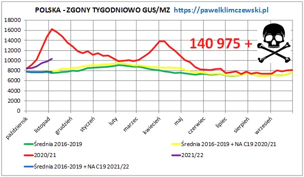

Program Zgony PLUS
Program Zgony + z wynikiem 140 975 na początek listopada 2021.

Nadeszły dane do tygodnia 45. czyli do 8 listopada 2021. Niestety filetowa linia, będąca kontynuacją czerwonej, idzie do góry. Nie tak ostro jak rok temu, ale jest to już 38% ponad normę. Zielona to średni tygodniowy poziom zgonów 2016-2019. Gdy dodamy do niej zgony "NA" covid mielibyśmy linie żółtą w poprzednim sezonie i linię niebieską w tym sezonie. Niestety mamy linię czerwoną w poprzednim sezonie i linię filetową w obecnym. Ograniczenie dostępu do służby zdrowia od marca 2020 niesie śmiertelne żniwo.
Na pytanie: "Dlaczego nie ma tu zgonów "Z covid?" odpowiadam zaocznie. Gdyby dało się sklasyfikować zgon jako "Na covid" a nie "Z covid" nikt by nie rezygnował z tej intratnej możliwości...
W tym sezonie zgonów "Na covid" w nadwyżce jest 5,7 %
Paweł Klimczewski